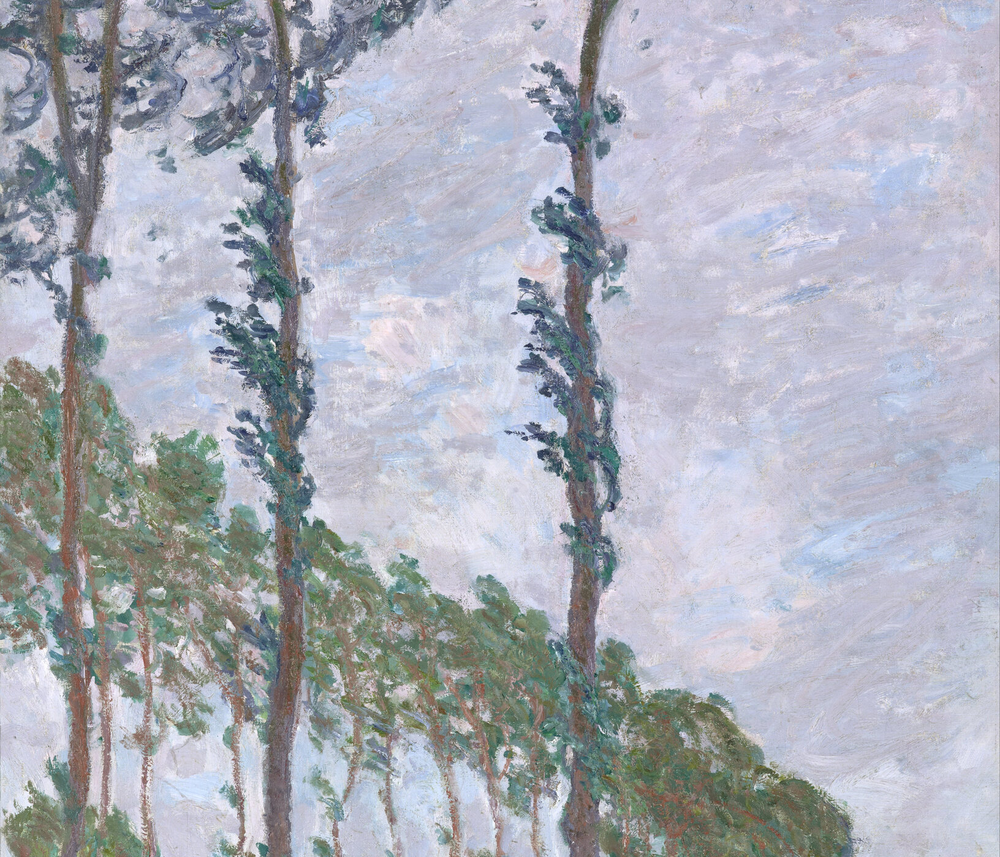
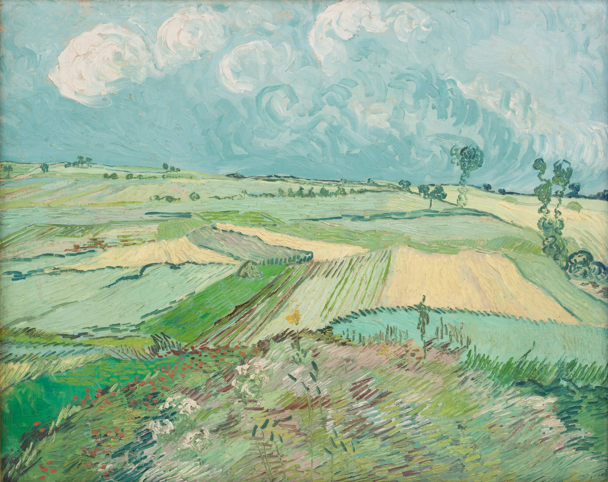
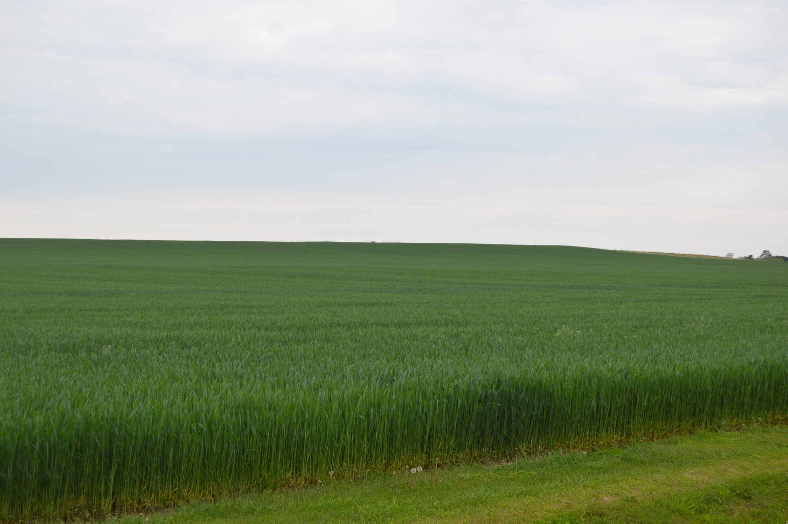

开篇
人走了以后，哀悼常把全部重量放进一个地点。土、碑、花，都要求人低头。这首诗把地点拆开。它不争论灵魂，只请你抬头。
风、雪面的碎光、麦粒上的日、秋雨、晨间还没开口的静、盘旋的鸟、夜里不硬的星——都是她改写成的句子。读完以后，墓还在。视线却不必那么低。
不要在我的墓前哭泣
Mary Elizabeth Frye · 1932
她不在土里。
她在天气里。
向下翻页
开篇
人走了以后，哀悼常把全部重量放进一个地点。土、碑、花，都要求人低头。这首诗把地点拆开。它不争论灵魂，只请你抬头。
风、雪面的碎光、麦粒上的日、秋雨、晨间还没开口的静、盘旋的鸟、夜里不硬的星——都是她改写成的句子。读完以后，墓还在。视线却不必那么低。
一九三二 · 巴尔的摩
字写在厨房桌上。纸是从购物纸袋上撕下的一块褐纸，边缘毛着，像临时找到的桌布。
当时家里住着一位无法回国的客人。母亲在海的另一边病着，后来死了。她说自己没有机会站到坟前，落下那一滴该落的泪。于是这首诗被写下来，不是为了发表，是为了把一个去不了的地方，换成许多去得了的地方。
后来它以许多名字流传。像它写的那样，不属于一座坟，也不属于一个人。
褐纸。不是碑。
诗页
Do not stand at my grave and weep,
I am not there. I do not sleep.
I am a thousand winds that blow.
I am the diamond glints on snow.
I am the sunlight on ripened grain.
I am the gentle autumn rain.
When you awaken in the morning's hush
I am the swift uplifting rush
Of quiet birds in circled flight.
I am the soft stars that shine at night.
Do not stand at my grave and cry;
I am not there. I did not die.
不要在我的墓前哭泣，
我不在那里。我并非沉睡。
我是吹过的千缕风。
我是雪上的碎钻光。
我是熟麦上的日光。
我是温柔的秋雨。
当你在晨静中醒来，
我是那一阵轻轻扬起——
安静的鸟，绕成圆圈。
我是夜里柔软的星。
不要在我的墓前哭喊；
我不在那里。我并未死去。
风
我是吹过的千缕风。

雪
我是雪上的碎钻光。
麦
我是熟麦上的日光。
雨
我是温柔的秋雨。

晨
当你在晨静中醒来

鸟
安静的鸟，绕成圆圈。
星
我是夜里柔软的星。
流传
她没有把这首诗登记为财产。字从纸袋上离开，进入葬礼、信、口头。所有权在这里变得不好意思。
它被抄过许多次，句子微微改过，像天气自己也会改。留下来的总是那一句：我不在那里。
Do not stand at my grave and weep,
I am not there. I do not sleep.
Do not stand at my grave and cry;
I am not there. I did not die.
不要在我的墓前哭喊；
我不在那里。我并未死去。